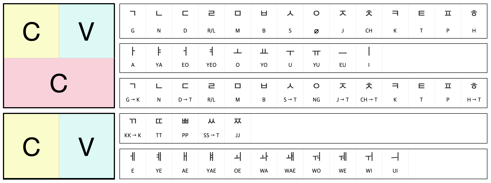

・cooking destroys bacteria, microbes, etc.
・cooking makes food taste incredible.
・fat melts, meat softens, proteins denatured, helps digestive enzymes.
・hard-to-digest carbohydrates unravel and soften.
・breakdown starches, vitamins and minerals are liberated.
・socialized with others. ・salty - receptors are stimulated by sodium.
・sour - receptors detects acid in fruits. source of acorbic acid. warning for decaying food.
・bitter - trigger by potentially harmful natural toxic substances. alerts danger.
・sweet - trigger by sufars. indicates an esasily digested energy.
・fatty - sense fat molecules in food. indicates that the food is rich in energy.
・umami - detect savory, meaty tates. stimulated by glutamatefrom amino acid. suggests that the food provieds proteinMaillard Reaction
Amino acids clash with sugar molecules at 284F・140C.
Before Maillard Reaction
1. Up to 284F・140C
During Maillard Reaction
1. 284F・140C
2. 302F・150C
3. 320F・160C
After Maillard Reaction
1. Above 356F・180C
・284F・140C: start of cooking - sugar molecules and amino acid have enough energy to react together.・284F・140C: browning reaction - foods start turning brown proteins and sugards clash and fuse creating new flavors and aroma.
・302F・150C: millard reaction intensifies - generates new flavor molecules twice. more complex flavors and aromas.
・320F・160C: acclerated peak - more enticing new flavorrs ans aromas created. cascades of malty, nutty, meaty and caramel-like flavors. ・356F・180C: pyrolysis - burning begins. food starts to char destroying aromas, leaving acrids, bitter falvors.
carbohydrates, proteins, fats breaks down.Flavor compounds
Includes fruity esters, spicy phenolics, flowery and citrusy terpenes,
and piquant sulfur-containing molecules.
Basic food ingredients
Spice
Are plant parts that are more densely loaded with flavour.
Tend to derive from seeds, fruits, roots, stems, flowers, or bark, and
are usually dried.
Herbs
Always come from leafy parts.
Phrasal Verbs
Consist of a verb plus one ore more particles. Particles could be an
adverb or a preposition.
1. Two-word phrasal verbs
Verb + particle (adverb or preposition)
2. Three-word phrasal verbs
Verb + two particles (adverb or preposition)
・get up, chills out, turn up, go out, check into, pick up・looks up to, sign off on, get on with, look forward to
소피아: 안녕하세요. 제 이름은 소피아입니다. 저는 미국 사람입니다.
민수: 반갑습니다. 제 이름은 민수입니다. 저는 한국 사람입니다.
소피아: 민수 씨, 안녕히 가세요.
민수: 안녕히 가세요.
민수는 학생입니다. 민수는 아침에 일찍 일어납니다. 민수는 아침밥을 먹고 학교에 갑니다. 민수는 소피아를 만났습니다. “안녕하세요?” 소피아가 인사합니다. “안녕하세요.” 민수도 인사합니다. 민수와 소피아는 학교에 가서 공부를 합니다.
한 아기 곰이 숲속에 살았습니다. 그가 늦잠을 잤고 학교에 늦게 갔습니다. 그의 반 친구들은 그를 놀렸습니다. 그가 그의 얼굴을 씻지 않았기 때문이었습니다. 그가 연못으로 갔고 그의 얼굴을 씻었습니다. 그의 얼굴이 깨끗해졌습니다. 그가 연못을 보고 웃었습니다. 연못도 그에게 웃어주었습니다.
메뚜기가 나무 위에서 노래를 부르고 있었습니다. 당나귀는 메뚜기처럼 노래를 잘 하고 싶었습니다. 당나귀가 메뚜기에게 물어봤습니다. “노래를 잘 하기 위해서 무엇을 먹니? 메뚜기가 대답했습니다. “나는 이슬만 먹어.” 당나귀는 이슬만 먹기 시작했습니다. 며칠 뒤, 그가 아팠고 죽었습니다.
Affinity Revolution: Steal Color Grading
1. Swatches
2. Adjustments
HSL Adjustments
1. Jewel Tones S - 83~73 L - 76~56
2. Pastel Tones S - 14~21 L - 89~96
3. Earth Tones S - 36~46 L - 77~36
4. Neutral Tones S - 1~10 L - 99~70
5. Fluorescent Tones S - 100~63 L - 100~82
6. Shade Tones S - 0~0 L - 0~100
1. Monochromatic 2. Analogous 3. Complementary 4. Analogous Complementary 5. Split Complementary 6. Triad
ϞϞ(๑⚈ ․̫ ⚈๑)∩